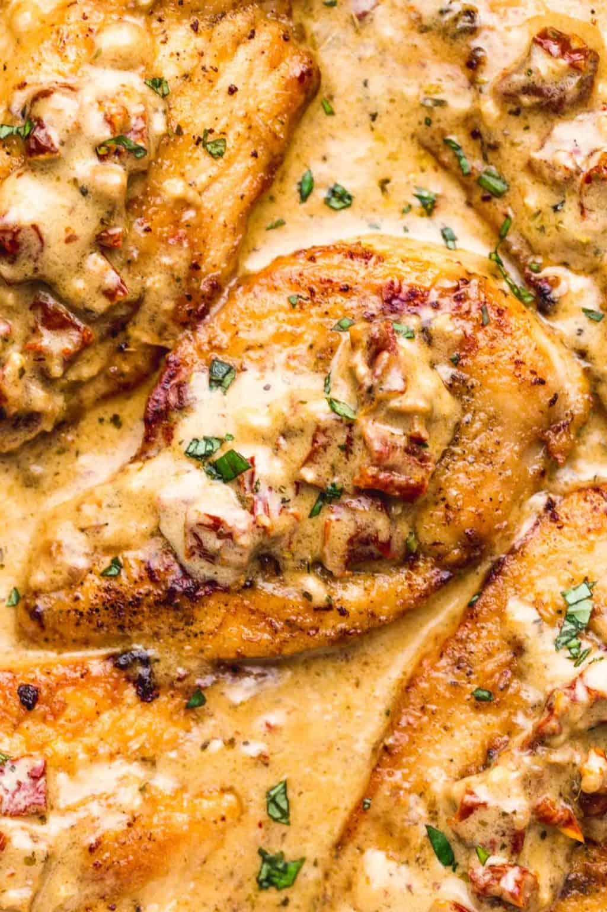

Marry Me Chicken

Serves 3
Ingredients
- 1/2 Teaspoon salt
- 1/4 Teaspoon ground black pepper
- 6 Tablespoons all-purpose flour
- 2 Tablespoons olive oil
- 2 Tablespoons unsalted butter
- 3 Cloves minced garlic
- 1 Cup chicken stock
- 1 Cup heavy cream
- 1/2 Cup grated parmesan cheese
- 1 Teaspoon chili flakes
- 1/4 Teaspoon oregano
- 1/4 Teaspoom thyme
- 1/3 Cup chopped sundried tomatoes
- 1 Tablespoon fresh basil leaves
Directions
- Season chicken with salt and pepper, then dredge in flour and shake off any excess.
- In a large skillet, heat olive oil and melt the butter on medium heat. Swirl pan to coat with oil and butter evenly.
- Brown the chicken (do not overcrowd and work in batches if needed) for 4-5 minutes on each side or until golden brown and cooked through. Transfer onto a plate, cover, and set aside.
- Saute the garlic for a minute or until it's fragrant. Add the chicken stock, and deglaze the pan scraping any bits stuck to the bottom of the pan with a wooden spoon.
- Adjust the heat to medium-low, and add the heavy cream and the parmesan cheese to the skillet. Allow the sauce to simmer for a couple of minutes, then season with chili flakes, thyme, and oregano.
- Season with salt and pepper to your taste, add the sundried tomatoes then put the chicken back in the sauce and let the sauce simmer and thicken for a few more minutes.
- Garnish with chopped fresh basil leaves and serve warm over pasta or rice.